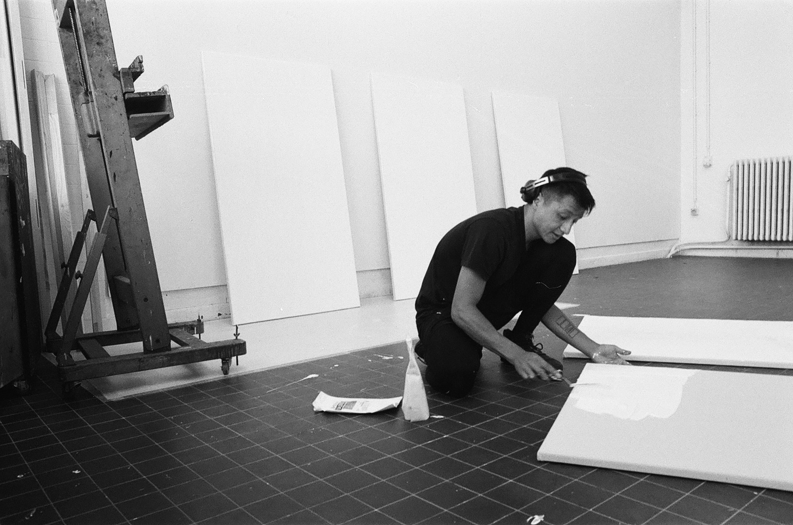

Lukas Suryadi Ishar
Film Studies, Philosophy, Comparative Literature B.A. - Freie Universität Berlin, McGill University Montreal
Painting B.F.A. - Royal Academy of Fine Arts Antwerp
Theatre Studies M.A. - Freie Universität Berlin, Universiteit Antwerpen